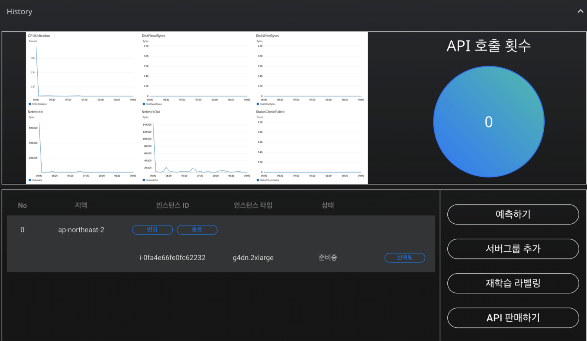

대시보드
1. 대시보드 역할?
대시보드를 이용하여 인스턴스를 모니터링하고 인공지능 구축,배포 및 관리 할 수있습니다. 인공지능 운영 환경의 실시간 모니터링하여 구축된 인공지능 파이프라인의 서버를 실시간으로 모니터링하고 이슈에 대해 신속하게 대응할 수 있습니다. 현재 이용하고 있는 인스턴트확인이 가능하며 최소 및 최대 용량 한도를 지정하여 서버 사용에 장애로 인한 과도한 비용이 발생하지 않도록 방지하고 있습니다.
2. 대시보드 활용 방법

1) 지표
사용량 지표 측정이 가능합니다. 다음과 같은 상태 확인 지표를 이용하여 실시간으로 이용량 및 이슈를 확인 할 수 있습니다.
CPU utilization
: CPU 사용률은 컴퓨팅 작업의 유형과 양에 따라 달라질 수 있습니다.
DiskReadBytes : 기간 당 사용한 볼륨에 대한 모든 디스크에서 읽은 바이트 수를 표시합니다.
DiskWriteBytes : 디스크에 기록 된 총 바이트 (MB)를 표시합니다.
NetworkIn : 인스턴스로 들어오는 네트워크 트래픽의 볼륨, 인스턴스가 받은 바이트 수를 표시합니다.
NetworkOut : 인스턴스가 보내는 네트워크 트래픽의 볼룸, 인스턴스에서 나가는 바이트 수를 표시합니다.
StatusCheckFailed : 인스턴스의 상태를 확인 가능 합니다. 인스턴스 상태 확인이 통과하면 "0"이고 그렇지 않으면 "1"입니다.
2) 기능
텍스트 수동 라벨링은 학습 데이터의 라벨을 직접 생성하는 작업입니다. 자연어 데이터인 영화 리뷰가 나열된 텍스트 데이터를 수동 라벨링 할 수 있습니다. 예를 들어, 영화 리뷰가 나열된 텍스트 데이터를 수동 라벨링 할 수 있습니다.
Labeling AI에서는 직접 라벨링 클래스의 개수와 이름을 정해야 합니다. 예를 들어, 위의 영화 리뷰 데이터 분석 프로젝트에서 라벨 클래스를 긍정(1), 부정(0)으로 라벨링 할 수 있습니다. AI 모델은 각 텍스트 데이터를 자연어처리로 분석하여 라벨링 값인 1, 0과의 관계를 학습할 것입니다.
텍스트 데이터 라벨링
| 서비스 기능 | 설명 |
|---|---|
| 예측하기 | 완성된 인공지능을 이용하여 인공지능은 분석 결과를 바탕으로 데이터 예측을 수행할 수 있습니다. |
| 서버그룹 추가 | 사용하시는 서버에 새로운 서버를 추가하여 가용성을 늘릴수 있습니다. 비정상적으로 작동된 인스턴트를 중단하고 새로운 인스턴트를 이용하여 유연하게 대체 가능합니다. |
| 재학습 | 초기 학습 데이터에 SKYHUB AI에 의해서 수집된 데이터를 추가하여 인공지능을 재학습 할 수있습니다. |
| API 판매 | SKYHUB AI는 완성된 AI를 신속하게 배포하고 사용할 수 있도록 4가지 언어의 API를 자동 생성합니다. |
| API 호출 횟수 | API를 이용하여 AI를 배포한 횟수를 의미합니다. |
3) API 호출 (python) 코드 -> tab 으로 바꿀예정
''' import requests
import json
url = "https://api.clickai.ai/159/predict/"
payload = {"modelid":228551,"apptoken":"1c4f41ac9a02404dada5023f3e20a3b9","parameter": {"나이__은행마케팅.csv":0,"직업__은행마케팅.csv":"","혼인여부__은행마케팅.csv":"","학업__은행마케팅.csv":"","신용카드 소지 여부__은행마케팅.csv":"","연봉__은행마케팅.csv":0,"집담보 대출__은행마케팅.csv":"","기타 대출__은행마케팅.csv":"","연락 방법__은행마케팅.csv":"","최근 연락한 날 (일)__은행마케팅.csv":0,"최근 연락한 날 (월)__은행마케팅.csv":"","최근 연락 기간__은행마케팅.csv":0,"최근 켐페인 참가 여부__은행마케팅.csv":0,"최근 켐페인 이후 시간 소요 (일)__은행마케팅.csv":0,"최근 켐페인 이후 연락 횟수__은행마케팅.csv":0,"이전 마케팅 성공 여부__은행마케팅.csv":""}}
headers = {
'content-type': "application/json",
'cache-control': "no-cache",
}
response = requests.request("POST", url, data=json.dumps(payload), headers=headers)
print(response.text) '''